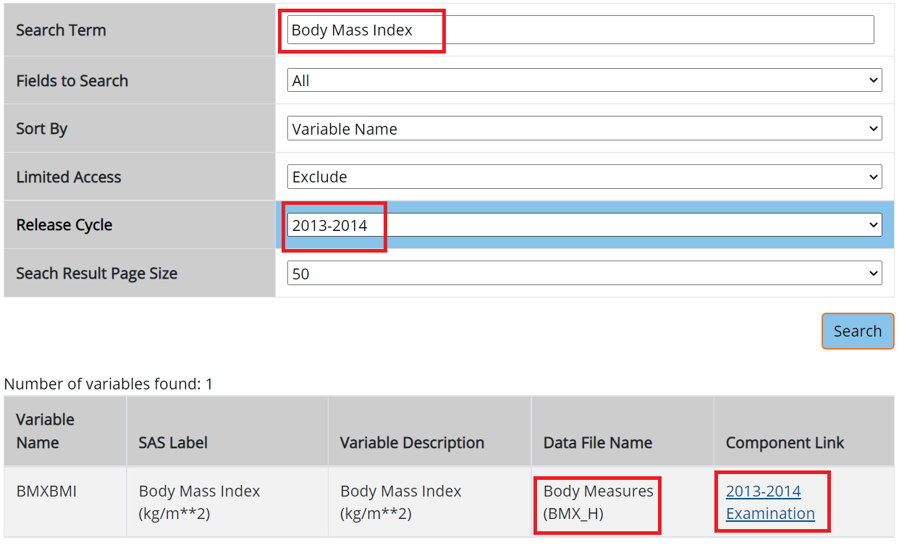
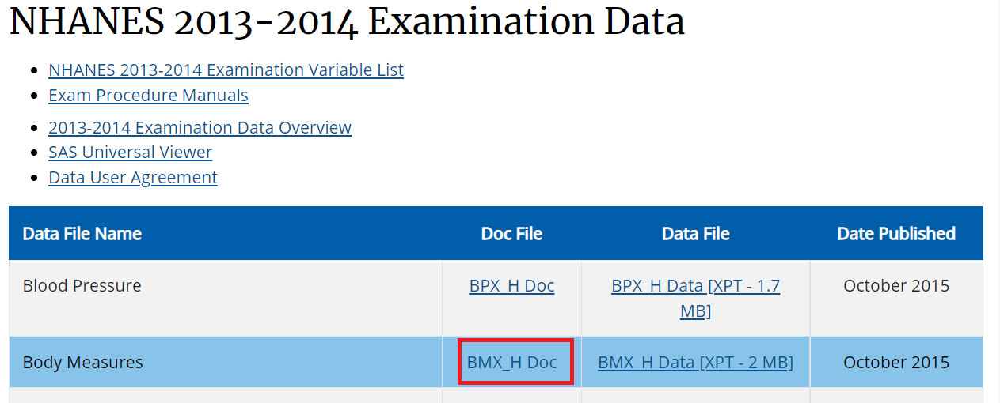
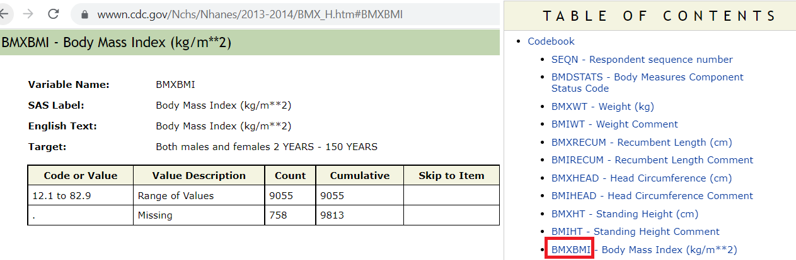
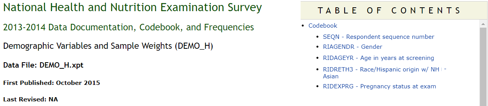

Reproducing results
The section instructs on reproducing the results from a specific article, detailing the eligibility criteria and variables of interest, guiding the user through accessing, merging, and filtering relevant NHANES data, and then recoding and comparing the results to ensure they match with the original article’s findings, all supported with visual aids and R code examples.
Example article
Let us use the article by Flegal et al. (2016) as our reference. DOI:10.1001/jama.2016.6458.
Flegal et al. (2016)
Task
Our task here is to reproduce the numbers reported in Table 1 from this article.
Eligibility criteria
Methods section from this article says:
- “For adults aged 20 years or older, obesity was defined according to clinical guidelines.”
- “Pregnant women were excluded from analysis.”
- “Participant age was grouped into categories of 20 to 39 years, 40 to 59 years, and 60 years and older.”
- Table 1 title says NHANES 2013-2014 was used.
Variables of interest
Variables of interest:
-
age(eligibility and stratifying variable) -
sex(stratifying variable) -
race(stratifying variable) -
pregnancy status(eligibility) -
obesity/BMI status(main variable of interest for the paper)
Searching for necessary variables
Search these variables using the NHANES variable keyword search within the 2013-14 cycle: cdc.gov/nchs/nhanes/search/
- Below is an example for BMI variable search:
- Identifying the component: Note that H is the index for 2013-14 cycle as seen in the picture:

- Identifying the variable:

- Rest of the variables all coming from demographic component

Downloading relevant variables
Demographic data
For the demographic data, we will use the DEMO_H file, where the index H represents the 2013-14 cycle.
Index H represents NHANES 2013-14 cycle
Tip
We use the nhanes function to download a NHANES datafile and nhanesTranslate function to encode the categorical variables to match with the CDC website.
Show the code
library(nhanesA)
#> Warning: package 'nhanesA' was built under R version 4.3.1
demo13 <- nhanes('DEMO_H')
Demo13 <- nhanesTranslate('DEMO_H', names(demo13), data=demo13)
#> Translated columns: RIDSTATR RIAGENDR RIDRETH1 RIDRETH3 RIDEXMON DMQMILIZ DMQADFC DMDBORN4 DMDCITZN DMDYRSUS DMDEDUC3 DMDEDUC2 DMDMARTL RIDEXPRG SIALANG SIAPROXY SIAINTRP FIALANG FIAPROXY FIAINTRP MIALANG MIAPROXY MIAINTRP AIALANGA DMDHHSIZ DMDFMSIZ DMDHHSZA DMDHHSZB DMDHHSZE DMDHRGND DMDHRBR4 DMDHREDU DMDHRMAR DMDHSEDU INDHHIN2 INDFMIN2Examination data
We are using same H index for BMI.
Show the code
exam13 <- nhanes('BMX_H')
Exam13 <- nhanesTranslate('BMX_H', names(exam13), data=exam13)
#> Translated columns: BMDSTATS BMIWT BMIHT BMDBMIC BMDSADCMSee all the column names in the data
Show the code
names(Demo13)
#> [1] "SEQN" "SDDSRVYR" "RIDSTATR" "RIAGENDR" "RIDAGEYR" "RIDAGEMN"
#> [7] "RIDRETH1" "RIDRETH3" "RIDEXMON" "RIDEXAGM" "DMQMILIZ" "DMQADFC"
#> [13] "DMDBORN4" "DMDCITZN" "DMDYRSUS" "DMDEDUC3" "DMDEDUC2" "DMDMARTL"
#> [19] "RIDEXPRG" "SIALANG" "SIAPROXY" "SIAINTRP" "FIALANG" "FIAPROXY"
#> [25] "FIAINTRP" "MIALANG" "MIAPROXY" "MIAINTRP" "AIALANGA" "DMDHHSIZ"
#> [31] "DMDFMSIZ" "DMDHHSZA" "DMDHHSZB" "DMDHHSZE" "DMDHRGND" "DMDHRAGE"
#> [37] "DMDHRBR4" "DMDHREDU" "DMDHRMAR" "DMDHSEDU" "WTINT2YR" "WTMEC2YR"
#> [43] "SDMVPSU" "SDMVSTRA" "INDHHIN2" "INDFMIN2" "INDFMPIR"
names(Exam13)
#> [1] "SEQN" "BMDSTATS" "BMXWT" "BMIWT" "BMXRECUM" "BMIRECUM"
#> [7] "BMXHEAD" "BMIHEAD" "BMXHT" "BMIHT" "BMXBMI" "BMDBMIC"
#> [13] "BMXLEG" "BMILEG" "BMXARML" "BMIARML" "BMXARMC" "BMIARMC"
#> [19] "BMXWAIST" "BMIWAIST" "BMXSAD1" "BMXSAD2" "BMXSAD3" "BMXSAD4"
#> [25] "BMDAVSAD" "BMDSADCM"Retain only useful variables
Show the code
demo13select <- Demo13[c("SEQN", # Respondent sequence number
"RIDEXPRG", # Pregnancy status at exam
"RIAGENDR", # Gender
"RIDAGEYR", # Age in years at screening
"RIDRETH3")] # Race/Hispanic origin w/ NH Asian
exam13select <- Exam13[c("SEQN", # Respondent sequence number
"BMXBMI")] # Body Mass Index (kg/m**2)Quick look at the data
Merge data
Use the ID variable SEQN to merge both data:
Within NHANES datasets in a given cycle, each person has an unique identifier number (variable name SEQN). We can use this SEQN variable to merge their data.
Investigate merged data
Let’s check whether any missing data available.
Show the code
require(tableone)
#> Loading required package: tableone
tab_nhanes <- CreateTableOne(data=merged.data, includeNA = TRUE)
print(tab_nhanes, showAllLevels = TRUE)
#>
#> level Overall
#> n 10175
#> RIDEXPRG (%) Yes, positive lab pregnancy test 65 ( 0.6)
#> The participant was not pregnant 1150 (11.3)
#> Cannot ascertain if the particip 94 ( 0.9)
#> <NA> 8866 (87.1)
#> RIAGENDR (%) Male 5003 (49.2)
#> Female 5172 (50.8)
#> RIDAGEYR (mean (SD)) 31.48 (24.42)
#> RIDRETH3 (%) Mexican American 1730 (17.0)
#> Other Hispanic 960 ( 9.4)
#> Non-Hispanic White 3674 (36.1)
#> Non-Hispanic Black 2267 (22.3)
#> Non-Hispanic Asian 1074 (10.6)
#> Other Race - Including Multi-Rac 470 ( 4.6)
#> BMXBMI (mean (SD)) 25.68 (7.96)As we can see, the RIDEXPRG variable contains a huge amount of missing information.
Show the code
summary(merged.data$BMXBMI)
#> Min. 1st Qu. Median Mean 3rd Qu. Max. NA's
#> 12.10 19.70 24.70 25.68 30.20 82.90 1120BMI also contains many missing values.
Applying eligibility criteria
We subset the data using criteria similar to the JAMA paper by Flegal et al. (2016) (see above)
Flegal et al. (2016)
Show the code
# No missing BMI
analytic.data1 <- subset(merged.data, !is.na(BMXBMI))
dim(analytic.data1)
#> [1] 9055 5
# Age >= 20
analytic.data2 <- subset(analytic.data1, RIDAGEYR >= 20)
dim(analytic.data2)
#> [1] 5520 5
table(analytic.data2$RIDEXPRG,useNA = "always")
#>
#> Yes, positive lab pregnancy test The participant was not pregnant
#> 65 1143
#> Cannot ascertain if the particip <NA>
#> 44 4268
# Pregnant women excluded
analytic.data3 <- subset(analytic.data2, is.na(RIDEXPRG) | RIDEXPRG !=
"Yes, positive lab pregnancy test")
dim(analytic.data3)
#> [1] 5455 5Recoding variables
Recode similar to the JAMA paper by Flegal et al. (2016) (see above)
Flegal et al. (2016)
Show the code
analytic.data3$AgeCat<-cut(analytic.data3$RIDAGEYR, c(0,20,40,60,Inf),
right = FALSE)
analytic.data3$Gender <- car::recode(analytic.data3$RIAGENDR,
"'1'='Male'; '2'='Female'")
table(analytic.data3$Gender,useNA = "always")
#>
#> Female Male <NA>
#> 2817 2638 0
analytic.data3$Race <- car::recode(analytic.data3$RIDRETH3,
"c('Mexican American',
'Other Hispanic')='Hispanic';
'Non-Hispanic White'='White';
'Non-Hispanic Black'='Black';
'Non-Hispanic Asian'='Asian';
else=NA")
analytic.data3$Race <- factor(analytic.data3$Race, levels =
c('White', 'Black', 'Asian', 'Hispanic'))Reproducing Table 1
Let’s now compare our table with with the Table 1 in the article:
Show the code
# Dataset for males
analytic.data3m <- subset(analytic.data3, Gender == "Male")
## Dataset for females
analytic.data3f <- subset(analytic.data3, Gender == "Female")
# Frequency table by age and gender
with(analytic.data3, table(AgeCat,Gender))
#> Gender
#> AgeCat Female Male
#> [0,20) 0 0
#> [20,40) 901 909
#> [40,60) 999 897
#> [60,Inf) 917 832
apply(with(analytic.data3, table(AgeCat,Gender)),1,sum)
#> [0,20) [20,40) [40,60) [60,Inf)
#> 0 1810 1896 1749
# Frequency table by age and race
with(analytic.data3, table(AgeCat,Race))
#> Race
#> AgeCat White Black Asian Hispanic
#> [0,20) 0 0 0 0
#> [20,40) 734 362 216 412
#> [40,60) 759 383 251 449
#> [60,Inf) 850 370 156 353
# Frequency table by age and race for males
with(analytic.data3m, table(AgeCat,Race))
#> Race
#> AgeCat White Black Asian Hispanic
#> [0,20) 0 0 0 0
#> [20,40) 386 182 106 189
#> [40,60) 360 179 120 215
#> [60,Inf) 384 195 74 169
# Frequency table by age and race for females
with(analytic.data3f, table(AgeCat,Race))
#> Race
#> AgeCat White Black Asian Hispanic
#> [0,20) 0 0 0 0
#> [20,40) 348 180 110 223
#> [40,60) 399 204 131 234
#> [60,Inf) 466 175 82 184As we can see, our frequencies exactly match with Table 1 in the article.
Also see (Dhana 2023) for a tidyverse solution
References
Dhana, A. 2023. “R & Python for Data Science.” https://datascienceplus.com/.
Flegal, Katherine M, Deanna Kruszon-Moran, Margaret D Carroll, Cheryl D Fryar, and Cynthia L Ogden. 2016. “Trends in Obesity Among Adults in the United States, 2005 to 2014.” Jama 315 (21): 2284–91.